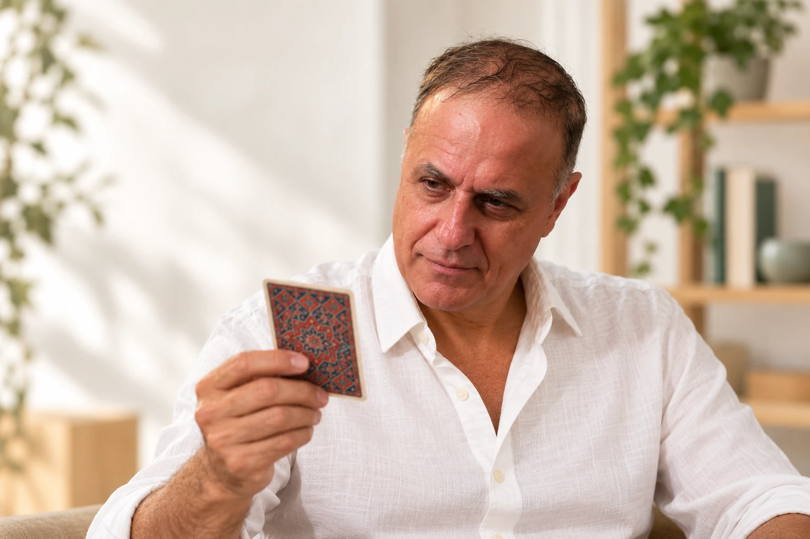
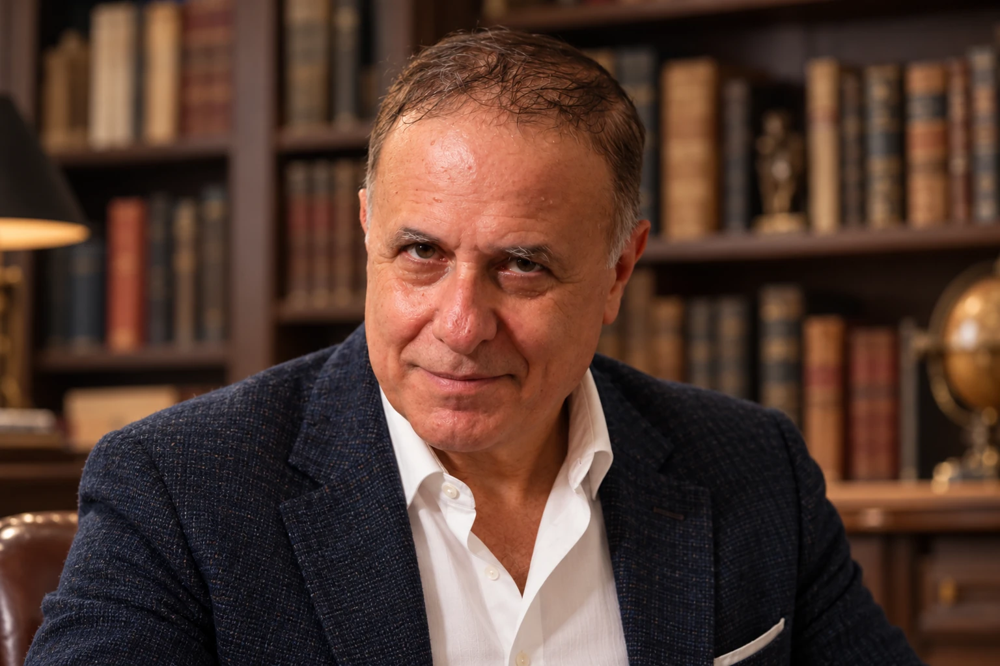

Dare forma a un’idea.
Un’intuizione, un nuovo percorso, qualcosa che vuoi costruire. Uno spazio per mettere a fuoco ciò che desideri e ciò che ti trattiene.
CONSULENZA INDIVIDUALE CON I TAROCCHI
Tarologia per il business, le relazioni e i progetti.
Una scelta nel lavoro, una relazione da comprendere, un’idea da sviluppare. Partiamo dalla tua domanda per osservare la situazione da nuove prospettive.
Parliamo della tua domanda ↗ Come si svolge la consulenza ↓
PAOLO MUSETTI
DA DOVE VUOI PARTIRE?
Un’intuizione, un nuovo percorso, qualcosa che vuoi costruire. Uno spazio per mettere a fuoco ciò che desideri e ciò che ti trattiene.
A volte sai che vuoi cambiare, ma non hai ancora le parole. Le immagini possono offrirti un punto da cui cominciare.
Quando le strade sono più di una, osservare la situazione da un’altra prospettiva può aiutarti a formulare domande più precise.
IL METODO, PASSO DOPO PASSO
Le carte aprono prospettive.
La scelta resta tua.
La tarologia è un metodo di osservazione guidata attraverso le immagini dei Tarocchi. Con il Metodo Arianna partiamo da una domanda, guardiamo dettagli e relazioni nella carta e li mettiamo in dialogo con una situazione concreta. Parole e risonanze aiutano a comporre una Traccia personale e un possibile passo successivo.

Partiamo da una situazione reale e la formuliamo in modo esplorabile: una scelta, una relazione, un progetto.
Osserviamo dettagli, gesti e rapporti tra le figure prima di ricorrere ai significati già conosciuti. La carta diventa una scena da interrogare.
Nel dialogo notiamo quali parole attirano l’attenzione e che cosa la persona vi riconosce. Una reazione o un’emozione è uno spunto soggettivo da esplorare, non una prova.
Raccogliamo ciò che ha senso per la persona in una frase, una domanda o un piccolo passo possibile. La Traccia deve essere chiara, ricordabile e sua.
LAVORO E AZIENDA
Osservare una scelta o una dinamica di gruppo, chiarire le priorità e formulare la domanda utile da cui partire.
RELAZIONI
Mettere a fuoco bisogni, aspettative e ciò che si desidera esprimere o comprendere nel dialogo.
PROGETTI
Guardare l’idea da una prospettiva nuova, riconoscere le risorse disponibili e individuare un primo passo possibile.
Non si tratta di prevedere il futuro o di stabilire cosa devi fare. Le carte aiutano a osservare; le decisioni restano tue. Il metodo è uno strumento di esplorazione e dialogo, non sostituisce consulenze professionali specialistiche.
Porta una domanda al dialogo ↗CHI TI ACCOMPAGNA
Immagini, ascolto e domande per esplorare progetti, scelte e cambiamenti.
Al centro ci sono la tua situazione, le immagini e le parole che emergono. L’approccio unisce osservazione, ascolto e domande precise per esplorare progetti, desideri e scelte.
I rapporti a voce, per iscritto e le consulenze sono seguiti personalmente. Le immagini del sito sono elaborate digitalmente e rappresentano scene illustrative.
Scopri l’approccio ↗
Uno sguardo diverso può essere
l’inizio di qualcosa di concreto.
FORMAZIONE PER GRUPPI E ORGANIZZAZIONI
La tarologia diventa una pratica condivisa di osservazione, comunicazione e confronto.
Si parte da immagini e domande per esplorare punti di vista, mettere in parola ciò che emerge e costruire una Traccia di gruppo. Ogni incontro si adatta al contesto e all’obiettivo dei partecipanti.
Scopri le proposte formative ↓TRE POSSIBILI PERCORSI
Un laboratorio per osservare le carte, formulare domande e costruire una Traccia a partire da un tema concreto.
Attività guidate per esplorare una situazione, confrontare prospettive e trovare parole più precise.
Un’esperienza per gruppi che mette al centro ascolto, collaborazione e scambio attraverso le immagini.
LIBRI E RICERCA
Tre libri sul rapporto tra immagini,
parole e significato.
PAOLO MUSETTI · 2026
Tarocchi, simbolo, rito e corpo: dal significato alla Traccia.
Un percorso che mette in relazione domanda, immagine, osservazione ed esperienza personale.
PAOLO MUSETTI · 2026
Il metodo Occhi di Bambino per osservare i Tarocchi prima di interpretarli.
Un invito a partire da ciò che vedi: dettagli, relazioni e domande, prima dei significati già conosciuti.
PAOLO ABOZZI · 2026
La Traccia della Parola.
Una ricerca sul linguaggio, sulla risonanza corporea e sull’osservazione nel lavoro maieutico.
PRIMA DI INIZIARE
Possiamo partire dal lavoro e dalla tua attività, dalle relazioni personali o professionali, oppure da un progetto. Mettiamo a fuoco la situazione, ciò che conta per te e le possibilità che vuoi esplorare.
No. Partiamo dall’osservazione delle immagini e dalla tua situazione. Non serve conoscere i significati tradizionali delle carte.
Il lavoro proposto usa i Tarocchi come strumento di esplorazione e dialogo. Le decisioni restano tue e non vengono promessi esiti futuri.
I messaggi, i colloqui e le consulenze sono seguiti personalmente. La consulenza è presentata da Paolo Musetti. Le scene del sito sono illustrative.
Compila il modulo in fondo alla pagina e raccontami in poche righe la tua richiesta. Prima di fissare un incontro, concorderemo modalità, durata e costo.
Laboratori sul Metodo Arianna, comunicazione e problem solving con le immagini, e attività di team building con la tarologia. La proposta si definisce in base al gruppo e all’obiettivo.
IL PRIMO PASSO È UN DIALOGO
Business, relazioni, progetti.
Raccontami in poche righe ciò su cui vuoi lavorare: ti risponderò personalmente.